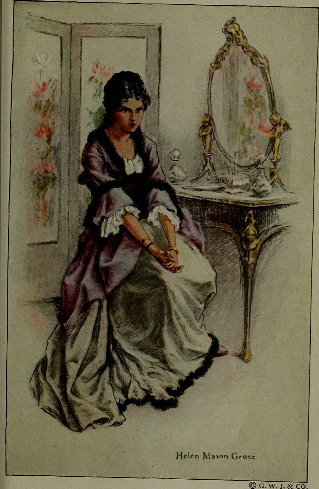
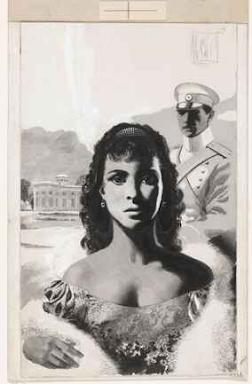

Affective / Emotional Focalization

Emotional focalization is a narrative device that structures the narration through the lens of a specific character, presenting events through their consciousness. It does not simply describe what a character feels, but filters details and descriptions according to their emotional and psychological state. Unlike fixed internal monologue or direct psychological description, emotional focalization operates indirectly. The device governs how external reality is portrayed by implicitly embedding the character’s perspective into the narration.
Leo Tolstoy employs emotional focalization frequently through Anna Karenina, often for central characters. The device is especially instrumental in three episodes that together trace Anna's psychological trajectory from heightened responsiveness to paranoid dissolution. A significant example takes place during Anna's return to St. Petersburg (Tolstoy 101-109). This journey by train is narrated according to Anna’s emotional interpretation, filtering details through her anxiety and excitement. The rhythm of the train's motion mirrors the rhythm of the narrative itself, connecting mechanical movement and psychological agitation. It is not presented neutrally but filtered through the growing intensity of Anna’s thoughts. The narration purposefully highlights the sensory details that characterize her emotional state, such as light, the sound of wind and snow, the velocity of the train, and the voices of other passengers. This technique also foregrounds certain sensory details while diminishing others as her attention turns inward to her interactions with Vronsky. Emotional focalization here compresses external and internal experience into a single perceptual field, blurring the boundary between environment and subjectivity. Tolstoy also uses emotional focalization to describe the horse races. He presents the same event twice, first from Vronsky’s perspective and then Anna’s. The double narration portrays “the races” as two distinct moral worlds and contrasts its consequences for both protagonists. The reader first sees the event through Vronsky as a sporting event that tests his skills and impacts his pride, masculinity, and military reputation. He experiences the race in constant motion entirely from Frou-Frou’s back, so his perspective is dictated by her position and proximity to the other racers, and limited to what is directly in front of him, beneath him, and close behind him. His narration is dominated by the movement, speed, and positions of the horses and other racers, and the rules of the race. The reader then witnesses the same event through Anna’s eyes, as a pivotal turning point in her life which determines her entire social standing, the fate of her marriage, and her relationships with Vronsky and Seryozha. She experiences the race from afar physically but is emotionally invested in the single point her binoculars are fixed upon: Vronsky. Her eyes are glued to him the entire time, so she does not notice when any other racers fall like the rest of the crowd does. By narrating the race from two distinct centers of consciousness, Tolstoy provides a full picture of the scene while indirectly distinguishing what each protagonist focuses on or misses. With emotional focalization, he conveys to the reader what is important to both Anna and Vronsky. A third instance of emotional focalization occurs in Anna's final moments before suicide. Every stranger's face, overheard fragment of conversation, and gesture is filtered through Anna's paranoia and despair. Her emotional state distorts these events, transforming them into evidence of hostility or indifference (Tolstoy 764-771). The narration does not state that Anna misinterprets her surroundings; it simply presents reality to the reader as she perceives it. This device creates a stream of perception in which the external world is blended with internal affect. The function of emotional focalization in Anna Karenina is to destabilize the boundary between objective narration and subjective experience. By filtering narrative detail through emotional states, Tolstoy creates a fluctuating narrative rhythm in which perception is continuously restructured. This produces both moral ambiguity, since no perspective is fully authoritative, and intense reader immersion, since events are not observed from outside but emotionally inhabited. The device integrates psychological depth into the mechanics of narration itself, allowing shifts in affect to reorganize descriptive reality and produce a dynamic narrative form in which meaning emerges not only from events themselves, but from the emotional conditions through which those events are perceived.
Works Cited
- Tolstoy, Leo. Anna Karenina. Translated by Rosamund Bartlett, Oxford University Press, 2014.